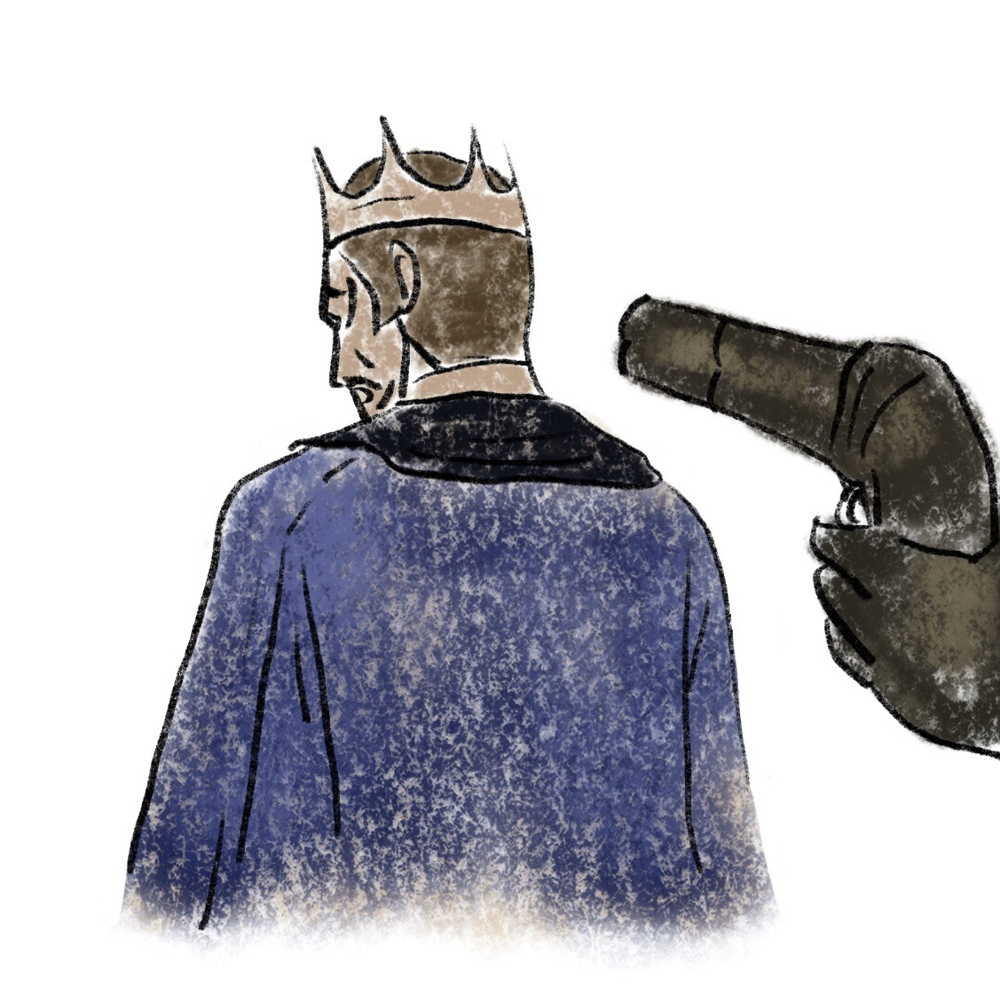
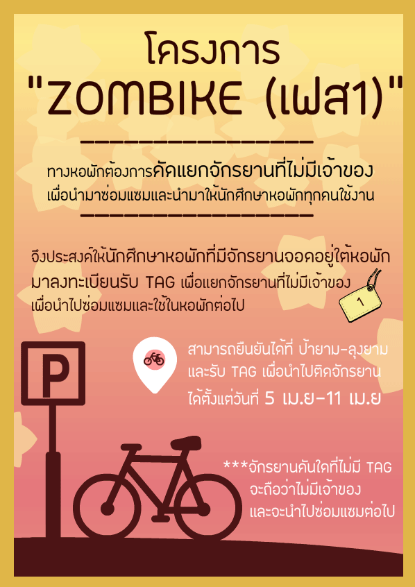

Blog
หน้าเว็บไซต์ที่ใช้ Blog ในการสร้าง สามารถดูตัวอย่างได้ที่นี่
Square game
หน้าเว็บไซต์ Square game สามารถดูตัวอย่างได้ที่นี่
Grid
หน้าเว็บไซต์ที่ใช้ Grid ในการสร้าง สามารถดูตัวอย่างได้ที่นี่
Register and login
หน้าเว็บไซต์ที่มีข้อมูลของการสมัครสมาชิกเเละล็อคอินเข้าสู่ระบบ สามารถดูตัวอย่างได้ที่นี่
Heart
หัวใจเป็นอวัยวะที่อ่อนไหวและเปลี่ยนแปลงรูปร่างได้ ตามอารมณ์เศร้าหรือความเครียดที่เกิดขึ้น
Sad
ความเศร้ามันเป็นสิ่งที่ทุกคนไม่อยากเจอ เเต่มันเป็นส่วนหนึ่งของการเติบโต

Betrayed
ความอ่อนเเอของพระราชา ทำให้มีผู้ไม่หวังดีฉวยโอกาสทำร้าย
Just smile
ความเชื่อมั่นในตัวเอง จะเป็นพลังให้เรากล้าที่จะทำสิ่งใหม่ๆ
Maditation
ความเงียบที่สุขที่สุด คือสุขจากการนั่งหลับตา
I'm beautiful
ใครจะว่าเป็ดขี้เหร่อย่างไร เเต่ทุกอย่างมีความงามในตัวของมันเอง มีเเค่บุคคลที่เห็นค่าของมันเท่านั้นที่จะสัมผัสความงามนั้นได้
Wait
เด็กทุกคนต้องการเวลา เเละความรักจากคุณพ่อคุณเเเม่
Apitsara logo
ออกแบบโลโก้ Apitsara Aodheang
Liu Yifei
ภาพหลิวอี้เฟย นักเเสดงจีน
Boon Poster
โปสเตอร์งานตักบาตรเฟรชชี่ ประจำปีการศึกษา 2561
Yiwa Sticker
สติ๊กเกอร์ไลน์สาวน้อยยี่หวา
Korn in Dream Hunt
ตัวละคร ก่อน ในเรื่อง เกมล่าฝัน
The other side
เวลาทำให้เกิดความผูกพันธ์เเละเกิดความหลงลืม วันหนึ่งเราอาจจะกลายเป็นแค่คนรู้จักกันก็ได้
Alone
บางอย่างสวยงาม เเต่ยากที่จะเข้าถึง
Eyes
ดวงตาที่เเข็งกร้าวของหญิงสาว เเต่ไม่มีใครรู้ว่าข้างในใจเธอกลับมีเเต่ความโศกเศร้า
maneuver
ภาพของหญิงสาวร่วมชุมนุมคิดแผนการที่มีความเสี่ยง
Radio of Rama 9
วิทยุสื่อสารของ รัชกาลที่ 9 สร้างขึ้นจากโปรแกรม solid work

Zombike poster
โปสเตอร์กิจกรรม Zombike ของหอพักนักศึกษาบางมด
night market bangmod poster
โปสเตอร์กิจกรรม Night market ของหอพักนักศึกษาบางมด
Shot note system
สรุประบบ system 12 ระบบ ในร่างกายของมนุษย์
Secretary Kim and Boss
เลขาคิมเเละบอส ในเรื่อง What Wrong With Secretary Kim
Good night
การนอนหลับที่ดีที่สุดคือ การนอนหลับในที่ที่ไม่มีแสงสว่าง